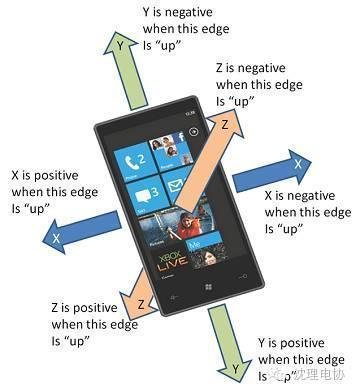
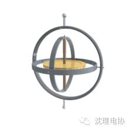
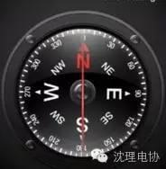

智能手机和汽车上的那些传感器原来是这么玩得
自从苹果公司在2007年发布第一代iPhone以来，以前看似和手机挨不着边的传感器也逐渐成为手机硬件的重要组成部分。相信大家使用手机时，都会发现通过将手机横向或纵向放置，屏幕会随着手机位置的不同而改变方向。这种功能就需要通过重力传感器来实现，除了重力传感器，还有很多其他类型的传感器被应用到手机中，例如磁阻传感器就是最重要的一种传感器。虽然手机可以通过GPS来判断方向，但在GPS信号不好或根本没有GPS信号的情况下，GPS就形同虚设。这时通过磁阻传感器就可以很容易判断方向(东、南、西、北)。有了磁阻传感器，也使罗盘(俗称指向针)的电子化成为可能。
1. 加速度传感器(Accelerometer) 感知手机当前的加速度，可以实现微信摇一摇类似的功能(摇一摇使手机瞬时加速度发生变化)，另外通过测量由于重力引起的加速度，你可以计算出设备相对于水平面的倾斜角度。
下图是加速度传感器数据坐标的示意图。X Y Z分别对应values[0]到[2]。X表示左右移动的加速度,Y表示前后移动的加速度,Z表示垂直方向的加速度. 例如，水平放在桌面上的手机从左侧向右侧移动，values[0]为负值;从右向左移动，values[0]为正值。

2. 重力感应器 与加速度传感器使用同一套坐标系。values数组中三个元素分别表示了X、Y、Z轴的重力大小。
其实重力感应器是手机早就集成的传感器，传统重力感应器它仅能识别水平方向和垂直方向的移动。现有的手机集成的重力感应器也就等同于加速度感应器(查了一下资料没有明确的功能区分，姑且这样认为)。屏幕会随着手机位置的不同而改变方向的功能就是通过这个实现的。
3. Gyroscope 陀螺仪 定义是一种用于测量角度以及维持方向的设备。中间黄色的转子是“陀螺”，周边三个“钢圈”则会因为设备改变姿态而跟着改变，通过这样来检测设备当前的状态。看定义不知道它与加速度传感器有什么不同，下面我们来看看他们到底有什么区别：加速度感应器用来感应加速度的，譬如手机从静止到移动就会产生加速度，你使劲摇一摇手机，就会产生加速度等等。另外然后人们利用手机倾斜时在加速度敏感轴上的重力不同，就衍生出了所谓的重力感应功能，可以粗略感应倾斜角;陀螺仪是用来固定一个方向的，就像旋转的陀螺放在一个平面上，不论将这个平面如何倾斜，陀螺的中心轴的方向总是会保持不变。在手机里装陀螺仪传感器，就能凭空固定一个方向，无论手机如何移动，这个方向总是保持不变，譬如说在一些手机射击游戏中，射击准心就是不变的，然后你可以通过移动手机位置，来瞄准目标，或者实现手机防抖功能。

4. GPS (Global Positioning System)这个大家都很熟悉，大家会经常用它来定位和导航。在android SDK中，有Location对象，这个对象包括当前位置的经纬度甚至可以通过location.getspeed()来获得手机用户的运行速度。当然获取Location不只有通过GPS这一个方式，可以通过基站或者WIFI定位。
5. 电子罗盘 目前很多手机都实现了电子罗盘的功能。要实现电子罗盘功能，需要一个检测磁场的三轴磁力传感器和一个三轴加速度传感器。随着微机械工艺的成熟，意法半导体推出将三轴磁力计和三轴加速计集成在一个封装里的二合一传感器模块LSM303DLH，方便用户在短时间内设计出成本低、性能高的电子罗盘。所以手机支持电子罗盘也就相当于支持磁场感应器。电子罗盘的最大用途就是当做指南针。

还有一些其他传感器：气压传感器用于判断手机当前海拔高度，光线传感器可以根据手机所处的光线条件调节屏幕亮度，距离传感器常用做识别人脸与手机的距离实现通话时亮屏和黑屏的切换。
自从智能手机饱和以后，各大巨头的眼光都瞄向了智能汽车，和手机一样，所谓“智能车辆”，就是在普通车辆的基础上增加了先进的传感器(雷达、摄像)、控制器、执行器等装置，通过车载传感系统和信息终端实现与人、车、路等的智能信息交换，使车辆具备智能的环境感知能力，能够自动分析车辆行驶的安全及危险状态，并使车辆按照人的意愿到达目的地，最终实现替代人来操作的目的。这其中就有我们都知晓的无人驾驶汽车。
车载传感器在在汽车电子系统中变得愈发重要了，特别是在涉及主动安全、驾驶辅助、导航等领域。一些传感器听着名称很耳熟，但是把几个传感器名称放在一起，又一下子说不出他们的区别和联系。
现在小编就把几个常用、易混的传感器比较一下：一般来说，3D加速仪、磁传感器、陀螺仪经常混在一起。
1. 3D加速仪
加速度传感器通过测量给定直线轴向的弹簧上的力来检测直线加速度和重力矢量。
但其有两个缺点：
1) 加速度传感器不能建立绝对或相对的航向。当处于固定状态时，3轴加速度传感器可以测量单个加速度轴上的加速度。可以根据垂直重力加速度矢量计算出倾斜角度。
2) 加速度传感器对运动太过敏感，极易抖动。易产生累计误差。•
2. 磁传感器
磁传感器用于测量地球的磁场，进而推导出航向。
缺点：
1)易受局部磁场干扰。需要开发复杂的算法区分和防止干扰。
3. 陀螺仪
陀螺仪可以测量围绕轴的旋转角速度，并且，其规模已经缩小到颗粒大小，低功耗，在消费电子产品广泛应用。
缺点：
1)不能提供绝对基准。如向下的角度、航向。
所以，要想获取设备的完整角度姿态：当前角度，和角速度。需要3D加速仪和磁传感器的配合使用。
通过3D加速仪，获取当前向下的角度; 通过磁传感器获取航向方向; 而陀螺仪能提供3D的角速度。
2)陀螺仪有零点偏移的现象。且对温度比较敏感。所以，需要对其进行校正。
另外， 方向盘转角、车轮转角(方向)也经常让人纠缠不清。这两个应该是在车辆电子稳定系统中应用比较多，用于防滑、防车轮刹死。或者，作为一种车辆姿态的数据来源，用于辅助校正车辆姿态。
4. 方向盘转角 steer wheel angle
方向盘转角与车轮转角不一定就成正比关系，但大致一般轿车的比例为10：1， 所以，方向盘一般转角在900度内，车轮转角范围90度左右!而且还要注意，汽车在转向的时候，不管是左传还是右转，左右轮的转角是不相等的。
5. 车轮转角(来源：变速箱 、或车轮)
转向时，外侧车轮走大圆，里侧的车轮走小圆。
目的，为了避免在汽车转向时产生的路面对汽车行驶的附加阻力和轮胎过快磨损，要求转向系能保证在汽车转向时，所有车轮均作纯滚动。显然，这只有在所有车轮的轴线都相交于一点时方能实现。
其他的例如，车速计、车灯传感器、GPS这些大家都很熟悉了，小编就不啰嗦了。

信息部/吴心成